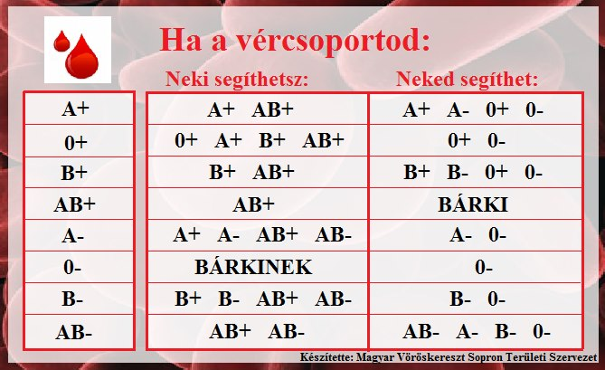

Kodomináns öröklésmenet
Együttes dominancia
AA
(A)
BB
(B)
Bemutatása az AB0-vércsoportrendszer A és B viszonyának öröklődésén keresztül.
Az ilyen típusú öröklésmenet esetén, ha egyszerre van jelen az A és a B, akkor azok hatása egyszerre érvényesül, egyik sem nyomja el a másikat: egyenlő mértékben jelenik meg az A és B hatása.
AA genotípus esetén A vércsoport alakul ki, BB genotípus esetén B vércsoport alakul ki, AB genotípus esetén pedig AB vércsoport alakul ki.
(A 0-s vércsoport öröklődése nem kodomináns módon történik, hanem domináns-recesszíven öröklődik az A és az B-vel szemben, így az csak akkor alakulhat ki, ha a szülőktől 2db 0-t (00) kap az egyed. Az A0 esetében szintén A vércsoport alakul ki, B0 esetében pedig szintén B alakul ki (lásd itt)).
AA
(A)
BB
(B)
(AB)
(AB)
(AB)
(AB)
Az F1 nemzedék létrejötte
Szülők
AA x BB (homozigóták)
AA-t és BB-t keresztezve a lehetőségekhez mérten 4 egyforma egyed születik
(mindegyik genotípusa AB, mindegyik fenotípusa AB vércsoportú)
AB
(AB)
AB
(AB)
(A)
(AB)
(AB)
(B)
Az F2 nemzedék létrejötte
Szülők
AB x AB (heterozigóták)
Az F1 nemzedékből származó két AB genotípusú egyedet keresztezve az F2 generációban létrejöhetnek a P generáció egyedeivel geno- és fenotípusban megegyező egyedek.
(AA + 2*AB + BB)
Vércsoportok
Milyen esetek eredményeznek adott vércsoportot
(AB0-rendszerben):
| Fenotípus | Genotípus |
|---|---|
| A | AA vagy A0 |
| B | BB vagy B0 |
| AB | AB |
| 0 | 00 |
Milyen esetek eredményeznek adott vércsoportot
(Rh-rendszerben):
| Fenotípus | Genotípus |
|---|---|
| + | ++ vagy +- |
| - | -- |
Példa
AB
(AB)
A0
(A)
(A)
(AB)
(A)
(B)
- -
(-)
+ -
(+)
(+)
(+)
(-)
(-)
AB- apa és A+ anya
Példákon keresztül bemutatva megtudhatjuk, hogy milyen vércsoportú gyerekei lehetnek egy adott AB- és egy A+ vércsoportú szülőpárnak.
Az első táblázatban láthatjuk az AB0-vércsoport öröklődését.
Ebből kiderül, hogy lehet B vércsoportú gyermekük is, pedig egyikük sem B vércsoportú, mert az anya hordozza a 0-t.
A második táblázatban pedig az Rh faktor lehetséges öröklődését figyelhetjük meg.
Az adott kombinációból 50% az esély arra, hogy pozitív vércsoportú gyermek születik, viszont ezek az utódok biztosan hordozni fogják az apjuktól örökölt negatívot is.
Véradás
Csak olyan embernek adhatunk vért, akinek a vérében megvan a vércsoportunk.
(pl: A vércsoportú ember adhat vért szükség esetén A vércsoportúnak és AB vércsoportúnak
is.)
A 0-s vércsoport különleges, mert bárkinek adhat, de csak 0-stól kaphat.
Rh faktor tekintetében pedig pozitív csak pozitívnak adhat, de bárkitől kaphat, negatív pedig bárkinek adhat, de csak negatívtól kaphat.
